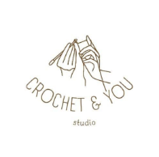

{kind=link}
Manager
Welcome to this creative space!

"Each stitch whispers secrets of grace"
Crochet & You Studio is a newly established creative arts and crafts business dedicated to the art of crochet since 2024. The selection of our store location is strategic, located at AEON Mall Taman Maluri, Jalan Jejaka, Maluri, 55100 Kuala Lumpur, Federal Territory of Kuala Lumpur.
Our studio also offers comprehensive crochet classes for beginners and acts as a supplier for a wide range of crochet materials and tools.
Crochet is the art of knitting using yarn and knitting needles to create a variety of unique products such as bags, hats, shirts, toys, tablecloths, and other accessories. Moreover, each item is exclusively handmade and can be customized according to the customer's taste. In addition, crochet products are suitable for various ages and are often used as special gifts. This traditional art also evolves with more modern designs, making it relevant to today's trends.
Organization Chart


Vision
▼
To provide a welcoming environment for people of all skill levels to come together and express their creativity through crochet. Whether they just starting out or have been crocheting for years, we believe that everyone has the potential to learn and grow.
Mission
▼
To craft high-quality, sustainable crochet items and offer excellent crochet lessons. Our goal is to inspire creativity, develop talents, and establish a welcoming community of crochet lovers. By offering our items and classes, we hope to spread the love for crochet, foster self-improvement, and make a positive impact on the world around us.
Frequently Asked Questions
▼
- What types of crochet products do you offer?
- How long does it take to complete a custom order?
- What happens if my item is damaged during shipping?
- Can I request a custom design?
- How do I care for crochet items?
We offer handmade crochet items such as bags, hats, flower and custom orders tailored to your preferences.
Depending on the complexity of the design, it can take anywhere from 1 to 4 weeks. We’ll provide an estimated timeline during the ordering process.
If your order arrives damaged, please contact us immediately with photos, and we’ll work on a replacement or refund.
Yes, we accept custom orders! Simply contact us with your design ideas or inspirations, and we’ll work together to bring it to life.
Most crochet items should be hand-washed in cold water and laid flat to dry. Detailed care instructions are provided with each order.